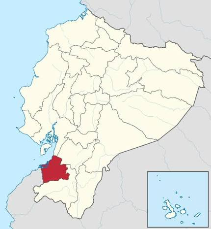

La provincia de El Oro está ubicada en el suroeste del Ecuador, entre la región Costa y las estribaciones de los Andes. Su capital es Machala. Se caracteriza por tener una gran diversidad de paisajes, desde zonas costeras con manglares y playas hasta áreas montañosas.
Su economía se basa principalmente en la agricultura, la acuicultura, la minería y el comercio. Destacan especialmente la producción de banano y camarón, además del cacao y otros productos agrícolas.
Entre sus principales atractivos turísticos están las playas de Jambelí, los manglares de Puerto Jeli, las zonas naturales de Buenaventura y el centro histórico de Zaruma.

Holalala